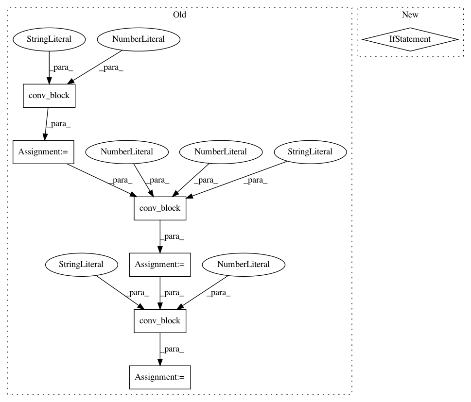

1d7b7345ab3254ed9b450dbd4208a3d63cb4963f,dataset/models/tf/fcn.py,FCN,_build,#FCN#,20
Before Change
layers_dicts = {"conv": conv, "batch_norm": batch_norm}
net = VGG16.body(dim, inputs["images"], b_norm, **layers_dicts)
net = conv_block(dim, net, 100, 7, "ca", "conv-out-1", **layers_dicts)
net = conv_block(dim, net, 100, 1, "ca", "conv-out-2", padding="VALID", **layers_dicts)
net = conv_block(dim, net, n_classes, 1, "ca", "conv-out-3", padding="VALID", **layers_dicts)
conv7 = net
pool4 = tf.get_default_graph().get_tensor_by_name("body/block-3/output:0")
pool3 = tf.get_default_graph().get_tensor_by_name("body/block-2/output:0")
if arch == "FCN32":
After Change
layers_dicts = {"conv": conv, "batch_norm": batch_norm}
net = VGG16.body(dim, inputs["images"], enable_batch_norm, **layers_dicts)
layout = "cna" * 3 if enable_batch_norm else "ca" * 3
net = conv_block(dim, net, [100, 100, n_classes], [7, 1, 1], layout, "conv-out",
padding=["SAME", "VALID", "VALID"], **layers_dicts)
conv7 = net
pool4 = tf.get_default_graph().get_tensor_by_name("body/block-3/output:0")
In pattern: SUPERPATTERN
Frequency: 3
Non-data size: 7
Instances
Project Name: analysiscenter/batchflow
Commit Name: 1d7b7345ab3254ed9b450dbd4208a3d63cb4963f
Time: 2017-11-09
Author: a.kozhevin@analysiscenter.ru
File Name: dataset/models/tf/fcn.py
Class Name: FCN
Method Name: _build
Project Name: analysiscenter/batchflow
Commit Name: 1d7b7345ab3254ed9b450dbd4208a3d63cb4963f
Time: 2017-11-09
Author: a.kozhevin@analysiscenter.ru
File Name: dataset/models/tf/linknet.py
Class Name: LinkNet
Method Name: _build
Project Name: analysiscenter/batchflow
Commit Name: 1d7b7345ab3254ed9b450dbd4208a3d63cb4963f
Time: 2017-11-09
Author: a.kozhevin@analysiscenter.ru
File Name: dataset/models/tf/linknet.py
Class Name: LinkNet
Method Name: upsampling_block